Engenharia no Monoposto
Uma viagem pelos sistemas, materiais, aerodinâmica, eletrônica e decisões que transformam um carro de F1 em uma máquina de competição.
1. Aerodinâmica Avançada (A Ciência da Invisibilidade)
Se os carros de rua são projetados para reduzir o arrasto e economizar combustível, os monopostos usam o ar para empurrar o carro contra o solo.
Esse fenômeno é a downforce (pressão aerodinâmica), que aumenta a aderência dos pneus sem adicionar massa ao veículo.
Efeito Solo (Canais Venturi): Reintroduzido recentemente na F1, o assoalho do carro possui túneis moldados que estreitam a passagem do ar por baixo do chassi.
De acordo com o Princípio de Bernoulli, o ar acelera nessa região estreita, criando uma zona de baixíssima pressão que "suga" o carro contra o asfalto.
Dianteira e Traseira: Funcionam como asas de avião invertidas.
A asa dianteira direciona o fluxo de ar ao redor das rodas dianteiras, enquanto a traseira gera pressão no eixo posterior.
Vórtices e Gerenciamento de Fluxo: Engenheiros usam defletores e pequenos apêndices para criar turbilhões de ar controlados.
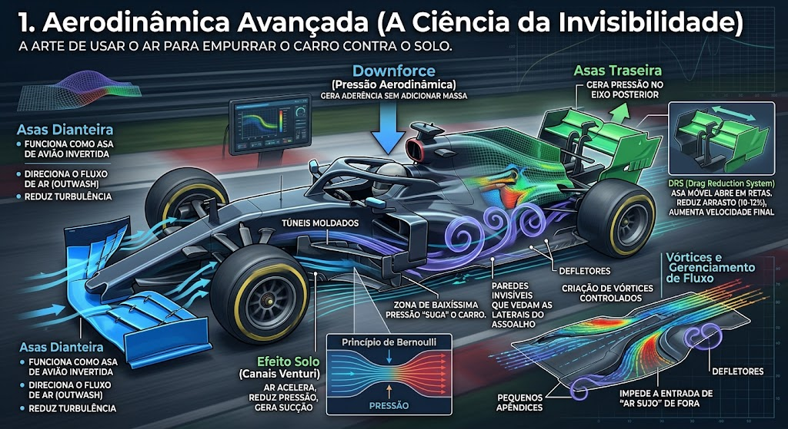
2. Unidade de Potência Híbrida (Power Unit)
Por: Carlos e Melissa
Os motores modernos de Fórmula 1 não são apenas motores a combustão; são sistemas propulsores híbridos ultra-complexos com eficiência térmica próxima a 50%.
MGU-K (Motor Generator Unit - Kinetic): Ligado ao eixo traseiro, ele recupera a energia cinética que seria perdida durante as frenagens, transformando-a em eletricidade para carregar as baterias.
MGU-H (Motor Generator Unit - Heat): Conectado diretamente ao turbocompressor, utiliza os gases do escapamento para gerar energia elétrica.
Motor de Combustão Interna (ICE): Geralmente um V6 de 1.6 litros turbinado.
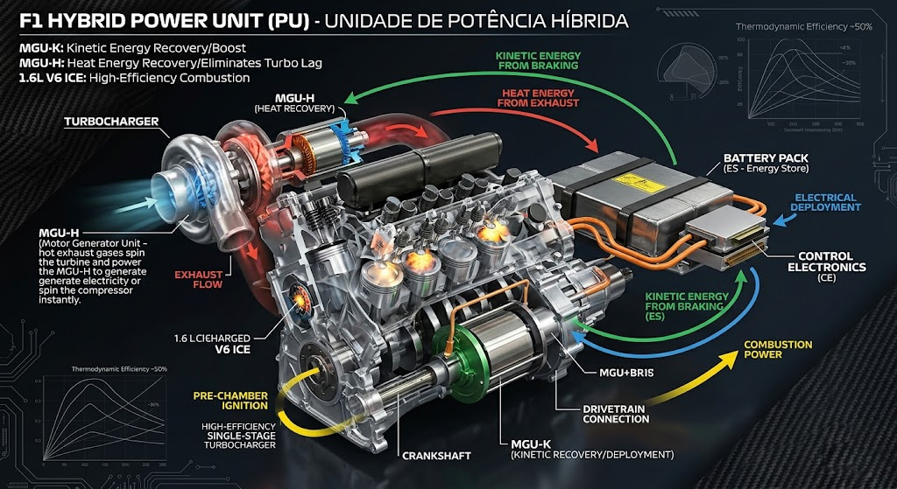
3. Ciência de Materiais e Chassi (O Monocoque)
A célula de sobrevivência do piloto, chamada de monocoque, precisa ser incrivelmente leve e resistente.
Fibra de Carbono e Kevlar: O chassi é construído com camadas de fibra de carbono e outros materiais estruturais.
Esse conjunto oferece grande rigidez e resistência, ajudando a proteger o piloto durante impactos.
O Halo: Uma estrutura posicionada acima do cockpit que protege a cabeça do piloto contra determinados impactos e detritos.
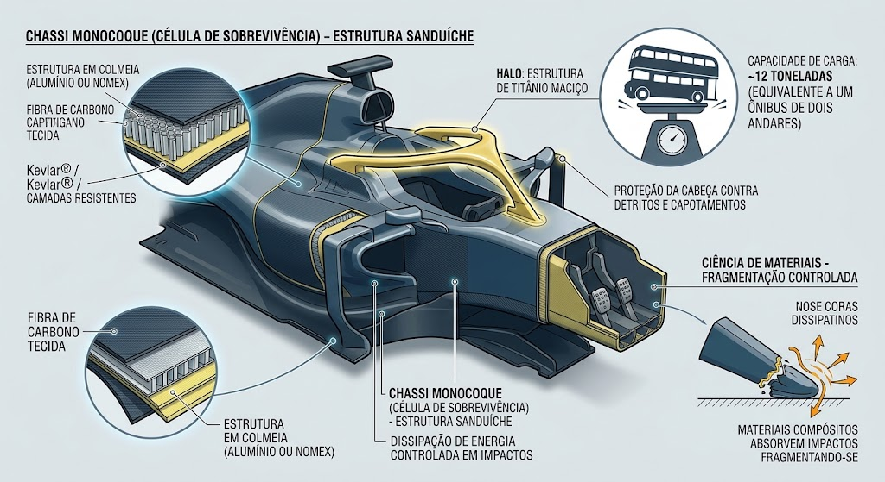
4. Dinâmica Veicular e Suspensão
Ao contrário de um carro comum, a suspensão de um monoposto não visa o conforto, mas sim manter a plataforma aerodinâmica estável.
Geometria Push-rod vs. Pull-rod: Os monopostos utilizam braços de suspensão conectados a sistemas internos que controlam o movimento das rodas.
Controle de Arfagem e Rolagem: A suspensão ajuda a controlar os movimentos da carroceria, mantendo o comportamento aerodinâmico do carro.
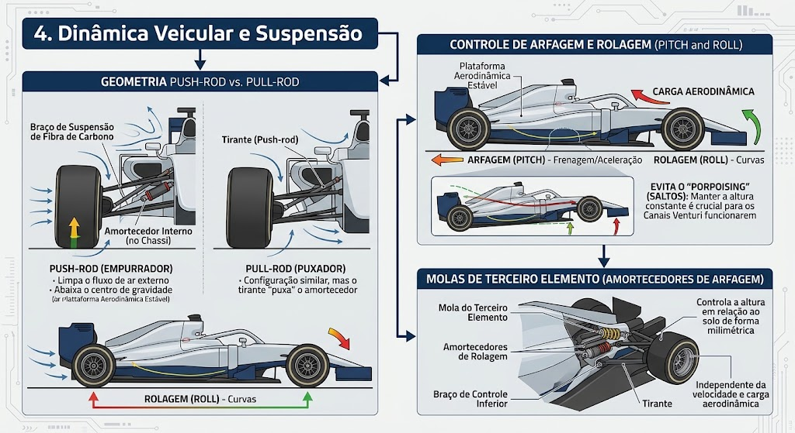
5. Eletrônica, Telemetria e Simulação
Um carro de Fórmula moderno é praticamente um laboratório tecnológico sobre rodas.
Sensores Onboard: O carro utiliza diversos sensores para monitorar temperaturas, pressões, forças e outros parâmetros.
Telemetria: Os dados coletados pelo carro são utilizados pelos engenheiros para acompanhar seu funcionamento durante a sessão.
CFD e Simuladores: As equipes utilizam computadores e simuladores para estudar o comportamento do carro antes de levar determinadas soluções para a pista.
Para aprofundarmos ainda mais na engenharia dos monopostos, precisamos olhar para as áreas onde o limite da física é testado em milissegundos e micrômetros.
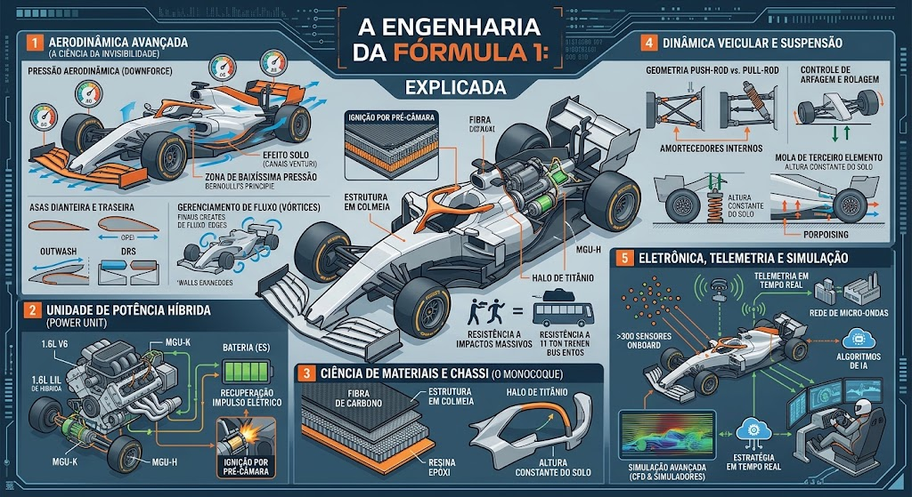
6. Transmissão e Câmbio Sem Costura (Seamless Gearbox)
A transmissão de um Fórmula é uma obra-prima de engenharia mecânica de precisão. Ela precisa canalizar cerca de 1.000 cavalos de potência para as rodas traseiras através de uma caixa que pesa uma fração de um câmbio de rua.
Tecnologia Seamless: Nos monopostos, o câmbio usa um sistema de engate duplo interno que pré-seleciona a próxima marcha. O torque é entregue de forma contínua, evitando que o carro balance e desestabilize a aerodinâmica.
Carcaça de Carbono ou Titânio: A caixa de câmbio também funciona como um elemento estrutural do chassi. A suspensão traseira é parafusada diretamente nela.
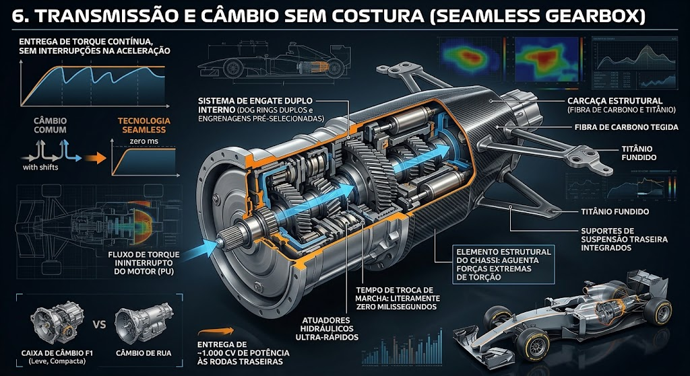
7. Tribologia e Gerenciamento Térmico
Com motores girando em rotações extremamente altas e componentes elétricos de alta voltagem sob uma carenagem compacta, o controle de temperatura e atrito é um dos maiores desafios.
Janelas de Operação Extremas: A água do motor opera acima de 100°C e o óleo do motor chega perto dos 140°C. Os engenheiros desenvolvem lubrificantes especiais para reduzir o atrito interno.
Refrigeração de Tamanho Mínimo: Radiadores com microcanaletas de alumínio são posicionados para maximizar a troca de calor utilizando a menor quantidade de ar possível.
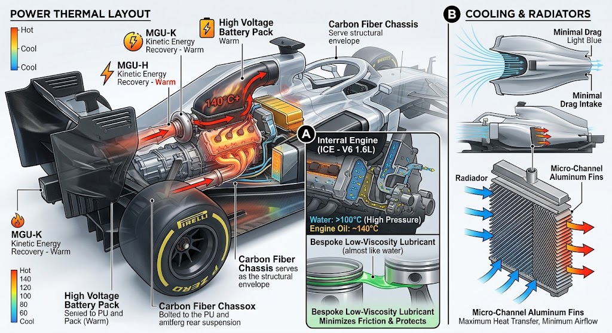
8. Sistemas de Freio de Carbono-Carbono
Parar um carro que está a 340 km/h exige uma enorme capacidade de dissipação de energia. Os freios de um monoposto transformam energia cinética em calor quase instantaneamente.
Discos Ventilados de Carbono: Os discos e pastilhas são feitos de carbono-carbono. Eles são leves e funcionam melhor quando estão quentes.
Fuross de Ventilação: Os discos possuem centenas de pequenos furos que aumentam a área de superfície e ajudam no resfriamento.
Brake-by-Wire: No eixo traseiro, um computador combina a frenagem mecânica com a resistência do motor elétrico MGU-K.
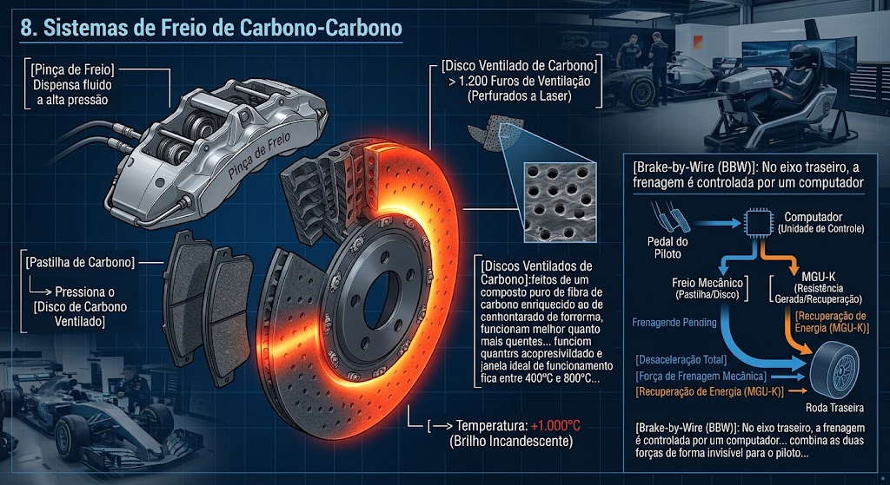
9. Engenharia de Pneus (A Única Conexão com o Solo)
De nada adianta ter grande potência e toneladas de downforce se os pneus não conseguirem transferir isso para o asfalto.
Borracha de Alta Histerese: Os compostos dos pneus sofrem deformação e geram calor, aumentando a aderência com as irregularidades do asfalto.
A Janela Térmica: Cada composto possui uma faixa de temperatura ideal. Fora dela, o pneu perde desempenho e aderência.
Gases de Calibragem: Os pneus utilizam gases secos para tornar a expansão térmica interna mais previsível durante a corrida.
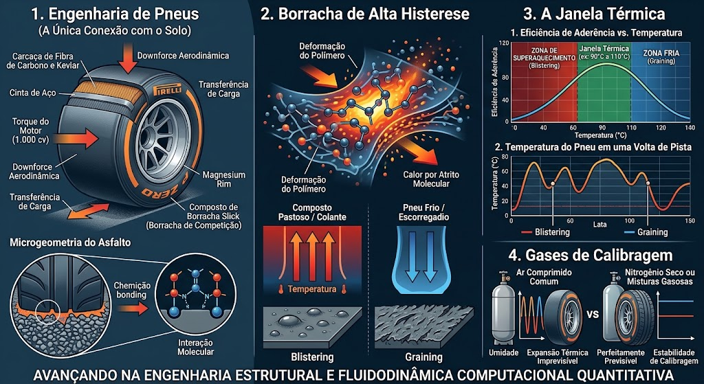
10. Dinâmica dos Fluidos Computacional (CFD) e Aeroelasticidade
A aerodinâmica moderna não estuda o carro apenas como um objeto estático. O ar é um fluido complexo e o carro está constantemente em movimento.
Aeroelasticidade: As peças de fibra de carbono podem sofrer pequenas deformações sob carga. Os engenheiros estudam essas deformações para controlar o comportamento aerodinâmico.
Gerenciamento do Ar Sujo: A geometria das asas e dos dutos ajuda a controlar os vórtices e afastar a turbulência das regiões importantes do carro.
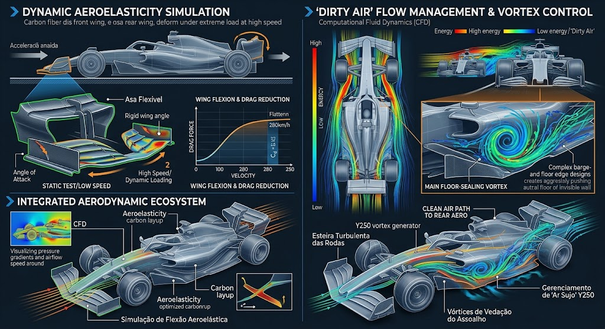
11. Sistema de Combustível e Hidráulica de Alta Pressão
Abaixo da carenagem existem sistemas que trabalham sob pressões extremamente altas para garantir respostas rápidas aos comandos.
Tanque de Combustível de Kevlar: O combustível é armazenado em uma bolsa flexível altamente resistente localizada próxima ao centro de gravidade do carro.
Sistemas Hidráulicos: Funções como direção, câmbio, embreagem e outros mecanismos utilizam sistemas hidráulicos de alta pressão.
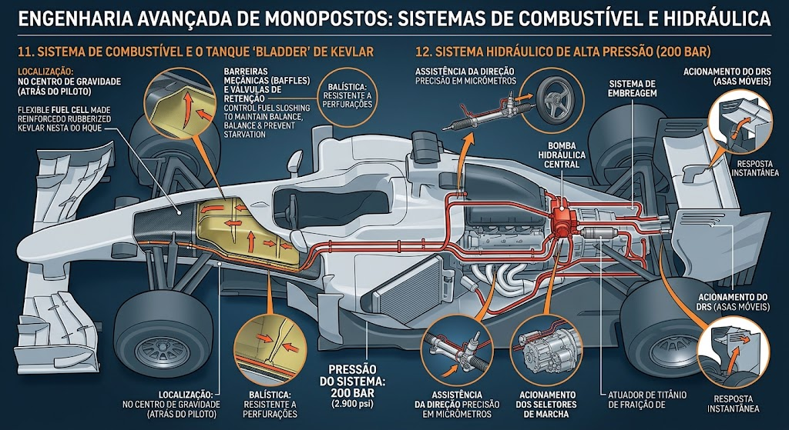
12. Cinemática de Suspensão e o Efeito de "Anti-Mergulho"
A geometria mecânica de um monoposto é projetada para combater os efeitos da inércia sem depender exclusivamente dos amortecedores.
Anti-Dive e Anti-Squat: A geometria da suspensão ajuda a impedir que a frente afunde durante a frenagem ou que a traseira afunde durante a aceleração.
Ackermann Variável: A geometria da direção permite que a roda interna de uma curva vire mais que a externa, ajudando a manter o contato dos pneus com o solo.
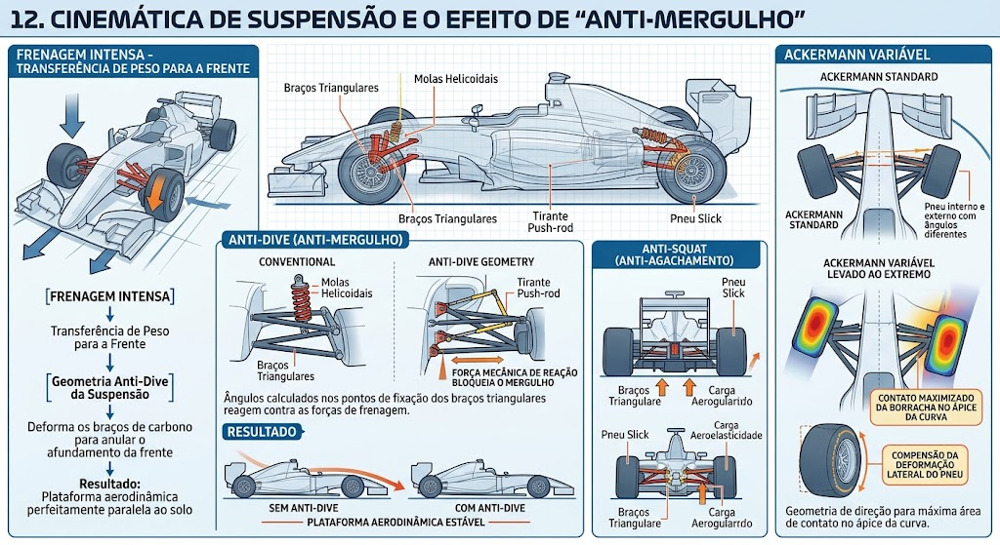
13. A Célula de Sobrevivência e Dissipação de Energia
A engenharia de segurança de um monoposto é projetada para proteger o piloto durante impactos de alta velocidade.
Estruturas de Impacto Sacrificiais: Estruturas na frente, laterais e traseira são projetadas para se deformar progressivamente durante uma colisão, absorvendo energia.
Sistema de Extinção de Incêndio: O carro possui um sistema integrado capaz de liberar agente extintor em determinadas situações de emergência.
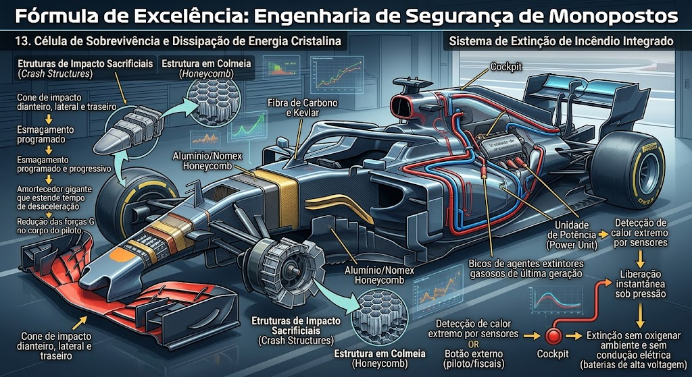
14. Engenharia Química e Formulação de Combustíveis
O combustível de um monoposto moderno é desenvolvido em nível molecular para maximizar a eficiência do motor.
Densidade Energética vs. Peso: Os engenheiros procuram maximizar a energia liberada pelo combustível mantendo o peso dentro dos limites regulamentares.
Resfriamento por Evaporação: O combustível atomizado pode absorver calor durante a vaporização, ajudando no controle da temperatura da combustão.
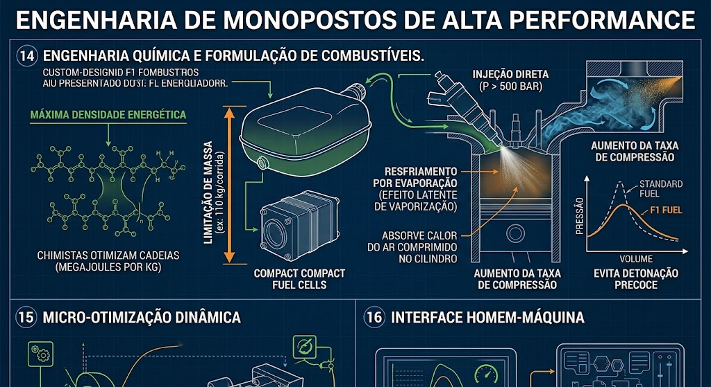
15. A Interface Homem-Máquina (O Volante)
O volante de um monoposto não serve apenas para esterçar as rodas. Ele concentra diversos comandos eletrônicos utilizados pelo piloto.
Mapeamento de Diferencial: O piloto pode ajustar o comportamento do diferencial em diferentes momentos da curva.
Harvesting e Deploy: O piloto também pode controlar estratégias relacionadas à recuperação e utilização da energia elétrica.
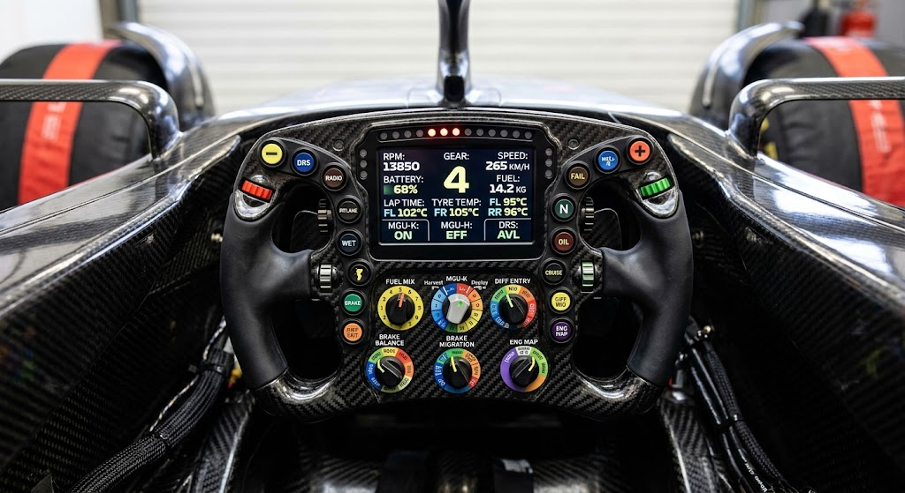
16. Microgeometria e o Fenômeno da "Camada Limite"
Na aerodinâmica avançada, pequenas diferenças no fluxo de ar podem alterar significativamente o comportamento do carro.
Separação da Camada Limite: Quando o ar se desprende da superfície do carro, pode ocorrer perda de downforce e aumento do arrasto.
Vedação Térmica do Assoalho: O gerenciamento do ar quente também pode ajudar a proteger o fluxo de ar sob o assoalho.
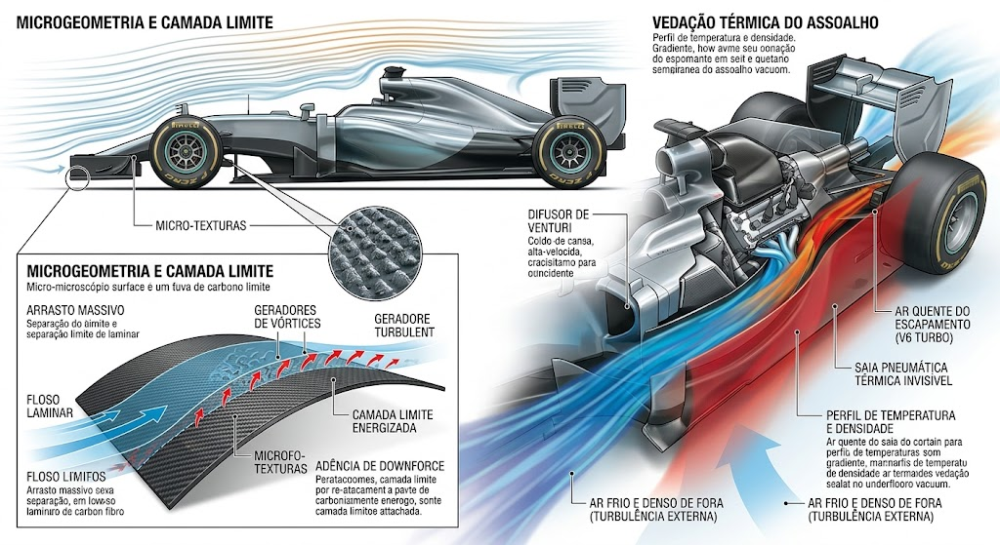
17. Sensores de Matriz Óptica e Pitot
Durante os testes, os carros se transformam em verdadeiros laboratórios de diagnóstico.
Tubos de Pitot e Aero Rakes: Matrizes de sensores medem a pressão e o fluxo do ar em diferentes regiões do carro.
Sensores de Temperatura: Sensores infravermelhos podem monitorar a temperatura dos pneus e ajudar os engenheiros a entender seu comportamento.
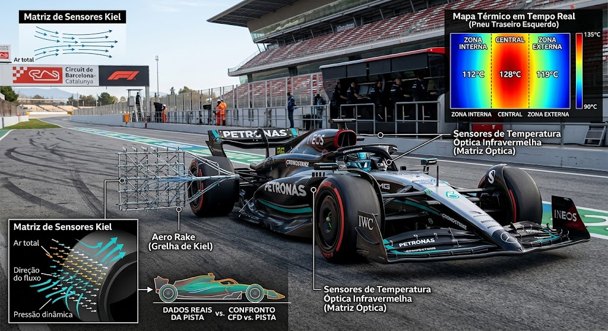
18. Metalurgia e Tratamento Térmico
Dentro do motor e da transmissão, os materiais são submetidos a pressões, temperaturas e rotações extremamente altas.
Ligas de Titânio-Alumínio: Algumas peças utilizam ligas especiais para combinar resistência e baixo peso.
Revestimento DLC: Revestimentos especiais podem reduzir o atrito entre componentes mecânicos.
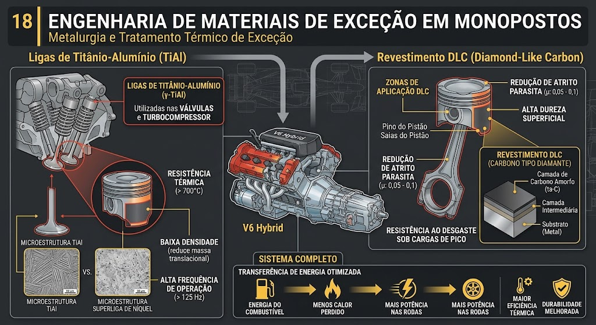
19. Inteligência Artificial e Algoritmos Gêmeos Digitais
Durante um fim de semana de corrida, os dados do carro podem ser comparados com modelos digitais desenvolvidos pela equipe.
Simulação: Os dados de telemetria ajudam a alimentar modelos computacionais que analisam diferentes cenários.
Modelagem Preditiva: Sistemas computacionais podem auxiliar os engenheiros na identificação de possíveis problemas e na tomada de decisões.
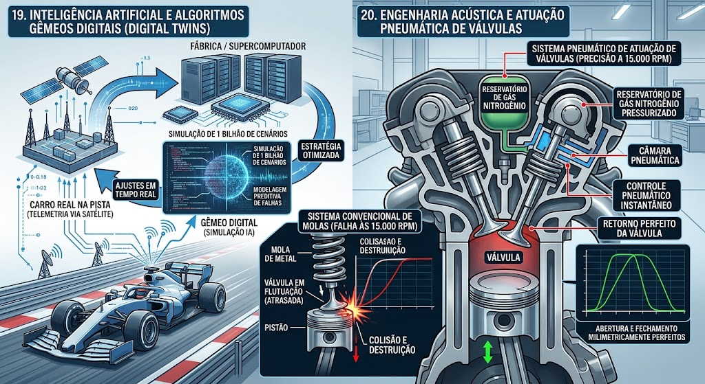
20. Engenharia Acústica e Atuação Pneumática de Válvulas
Molas metálicas convencionais enfrentam limitações quando o motor trabalha em rotações extremamente altas.
Válvulas Pneumáticas: Sistemas pneumáticos utilizam gás pressurizado para controlar a abertura e o fechamento das válvulas em altas rotações.

21. Escalonamento Micro-Mecânico e Lastro Eficiente
O peso mínimo de um monoposto é definido pelo regulamento, por isso os engenheiros procuram controlar cuidadosamente a distribuição de massa.
Gerenciamento de Lastro: Materiais densos podem ser utilizados para posicionar o peso em locais estratégicos.
Ajuste do Centro de Gravidade: A distribuição do peso pode ser refinada para melhorar o equilíbrio do carro.

22. Piezoeletricidade e Atuadores Atômicos na Injeção
A precisão mecânica convencional pode não ser suficiente para controlar a injeção de combustível em tempos extremamente curtos.
Injetores Piezoelétricos: Cristais piezoelétricos mudam de forma quando recebem corrente elétrica, permitindo movimentos extremamente rápidos e precisos.
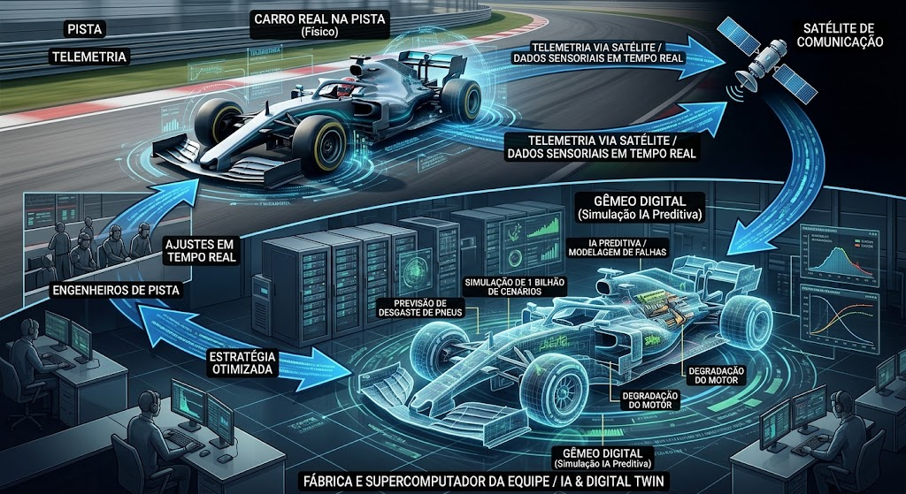
23. Nanotecnologia e Engenharia de Superfície Hidrofóbica
A água da chuva e os detritos da pista podem alterar o comportamento aerodinâmico do carro.
Pinturas Nanotestruturadas: Revestimentos especiais podem modificar as propriedades da superfície para reduzir a aderência de água e sujeira.
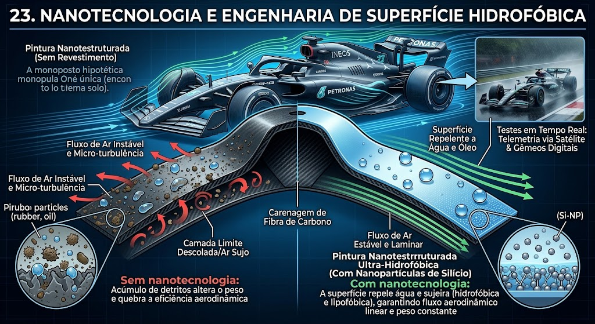
24. Engenharia de Turbinas com Geometria de Voluta Dupla
O turbocompressor trabalha em regimes de rotação extremamente elevados e precisa funcionar de maneira eficiente em diferentes condições.
Volutas Divididas: A separação dos fluxos de gases ajuda a controlar as ondas de pressão e aproveitar melhor a energia dos gases de escape.
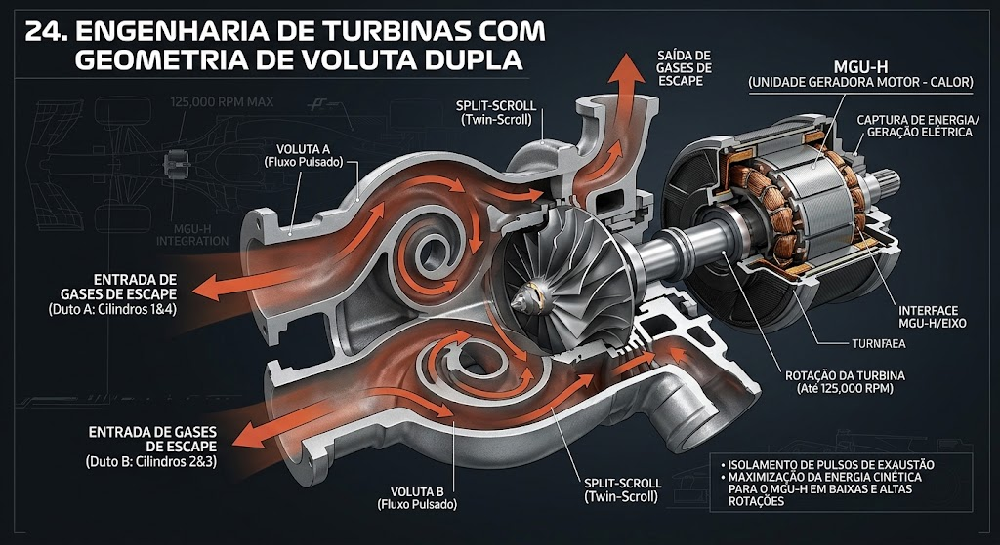
25. Estruturas de Matriz Metálica (MMC) e Intermetálicos
Quando a fibra de carbono não pode ser utilizada, materiais metálicos avançados podem oferecer uma combinação de baixo peso e resistência.
Compostos de Matriz Metálica: Partículas cerâmicas podem ser incorporadas a metais para melhorar suas propriedades mecânicas.
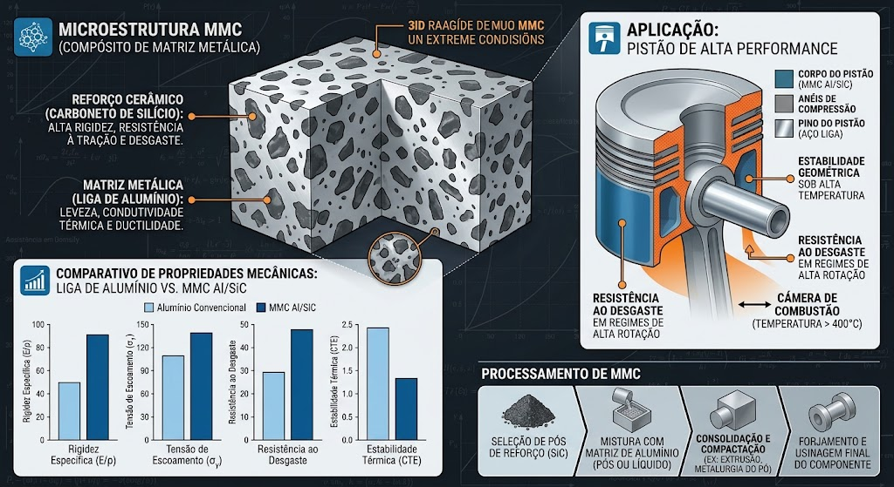
26. Termografia Ativa e Gerenciamento da Bateria
O sistema de armazenamento de energia do monoposto precisa controlar cuidadosamente temperatura e desempenho.
Gerenciamento Térmico: Sistemas de refrigeração ajudam a manter as células da bateria dentro de uma faixa adequada de funcionamento.
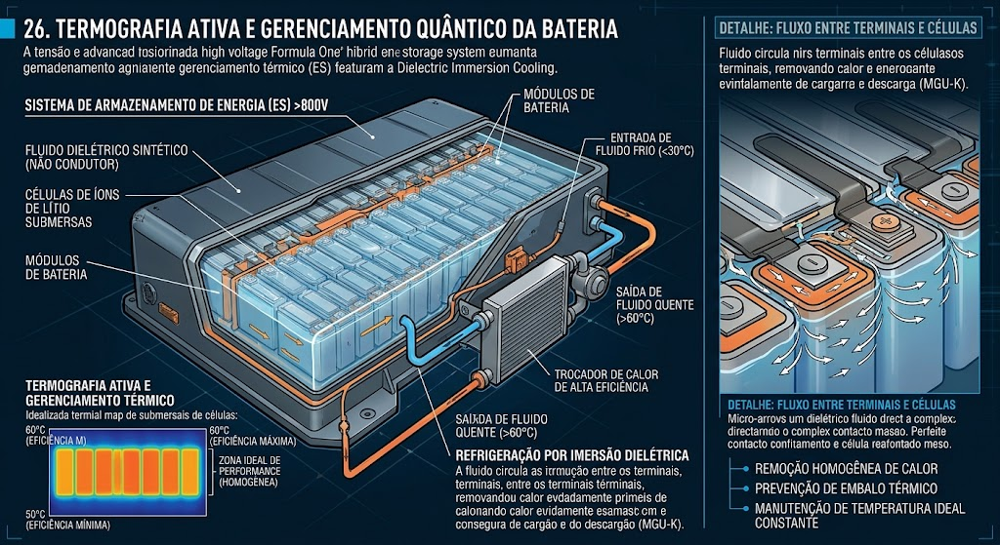
27. Cinemática Elastocinemática dos Braços de Suspensão
Os braços da suspensão podem ser projetados para apresentar pequenas deformações controladas quando submetidos a diferentes forças.
Flexão Direcionada: A construção dos braços de fibra de carbono permite controlar como eles se deformam sob determinadas cargas.
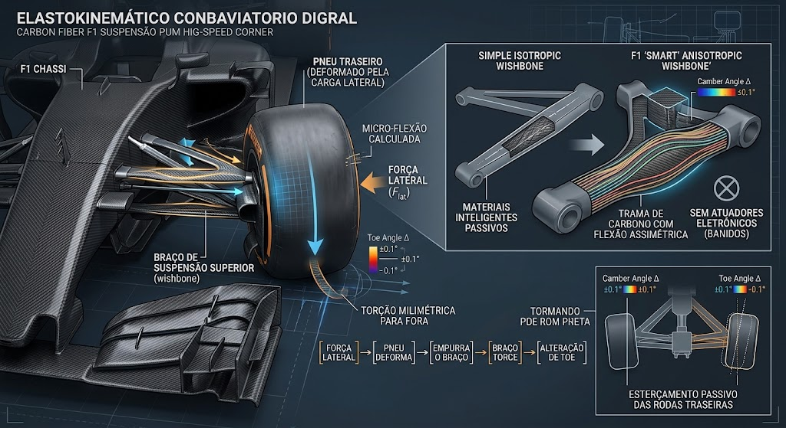
28. Neuroengenharia e Telemetria Biométrica
O piloto também pode ser considerado parte importante do sistema do monoposto, e diferentes tecnologias podem monitorar suas condições durante a corrida.
Sensores Biométricos: Tecnologias biométricas podem monitorar informações fisiológicas relevantes para a segurança.
Acelerômetros: Sensores podem medir as forças e acelerações sofridas pelo piloto.
29. Capitação e Dinâmica de Fluidos Transiente em Bombas
Com o carro submetido a grandes forças laterais, manter os fluidos circulando corretamente é um grande desafio.
Cavitação: Em determinadas condições, podem surgir bolhas de vapor dentro das bombas, prejudicando seu funcionamento.
Geometria das Palhetas: Os engenheiros projetam os componentes das bombas para manter o fluxo estável e reduzir a possibilidade de cavitação.
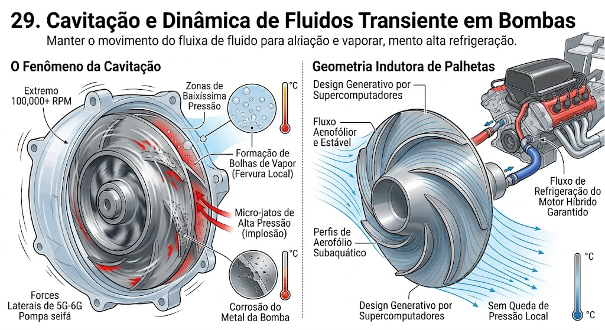
30. Tribofilmologia e Aditivação de Óleos
O óleo de um motor de competição não serve apenas para lubrificar. Ele também ajuda a proteger as superfícies dos componentes.
Tribofilmes: Alguns aditivos podem formar camadas protetoras microscópicas entre superfícies metálicas, reduzindo o contato direto e o desgaste.
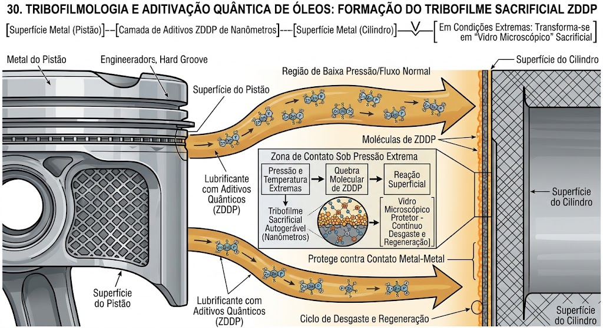
31. Otimização de Topologia e Manufatura Aditiva de Titânio
Muitas peças modernas possuem formas complexas projetadas para oferecer máxima resistência com o menor peso possível.
Design Generativo: Softwares podem calcular formas estruturais baseadas nas forças que a peça precisa suportar.
Impressão 3D: A manufatura aditiva permite produzir componentes complexos camada por camada.
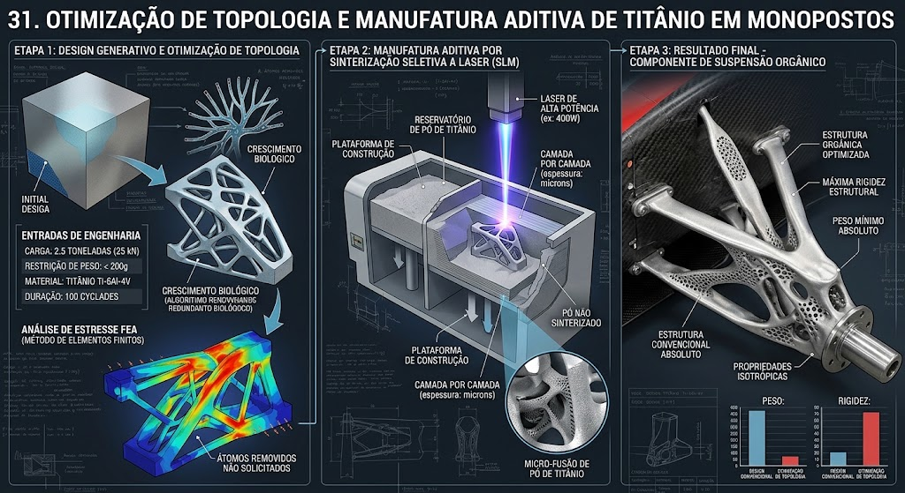
32. Acoplamento Aero-Térmico do Diffuser Blow Moderno
Os engenheiros utilizam os efeitos térmicos e aerodinâmicos do fluxo de gases para otimizar o comportamento do difusor.
Diferencial de Energia Térmica: O fluxo de gases quentes pode interagir com o fluxo de ar ao redor da parte traseira do carro, influenciando o comportamento aerodinâmico.
Esse tipo de integração entre termodinâmica e aerodinâmica demonstra como diferentes áreas da engenharia trabalham juntas em um monoposto.
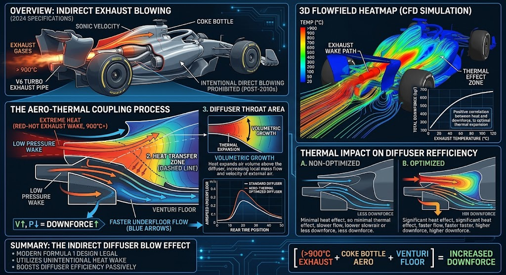
🏁 Você é o engenheiro — decisão do pit wall
Escolha uma situação e veja uma estratégia possível.
Evolução da engenharia na F1
Mini glossário F1
Força aerodinâmica que pressiona o carro contra a pista.
Resistência aerodinâmica que reduz a velocidade nas retas.
Simulação computacional do comportamento de fluidos.
Dados enviados pelo carro para análise da equipe.
Redução do arrasto ao seguir de perto outro carro.
Parada antecipada para tentar ganhar posição com pneus novos.
Zebra da pista usada pelo piloto para otimizar a trajetória.
Equilíbrio entre o comportamento dianteiro e traseiro do carro.